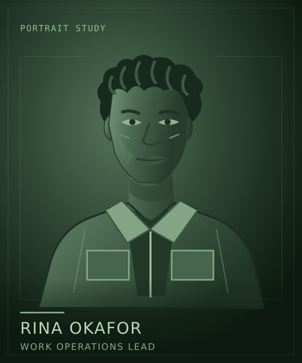

Lore / Rina Okafor
Rina Okafor
 | |
| Portrait concept. Appearance and clothing are not established designs. | |
| Role | Work operations lead |
|---|---|
| Employer | Clearwell Waterworks |
| Work | Cargo transfers, recovery equipment, external work |
{kind=link}
Rina Okafor leads work operations aboard Kaveri, Jonah Mercer's Clearwell workship. Cargo transfers, recovery equipment, and external work turn the ship's arrival into something useful for the people waiting at the other end.
People behind the work
Rina knows Baikal's residents personally. Their needs do not arrive as anonymous demands on the crew's time. That connection makes Rina the strongest advocate for helping when people are in trouble.
Useful work and responsibility to the community are closely linked in Rina's outlook. A problem can remain unfinished even when the crew's assigned part of the job is technically done.
Obligations aboard
Rina's willingness to help meets a different concern in Tomas Vega: who has agreed to the risk, and what does the crew still owe to its existing work?
Jonah has to make decisions with both concerns in view. Rina brings the people outside the hull into that conversation without making the people inside it less important.